Proyek
Rotibakar Hongerloop
Rotibakar Hongerloop merupakan website pemesanan makanan berbasis web yang dikembangkan untuk membantu proses pemesanan menu secara online. Sistem ini memungkinkan pelanggan melihat daftar menu, melakukan pemesanan, serta memudahkan pengelolaan transaksi dan data pesanan oleh admin. Proyek ini dibangun menggunakan HTML, CSS, JavaScript, PHP, dan Laravel.
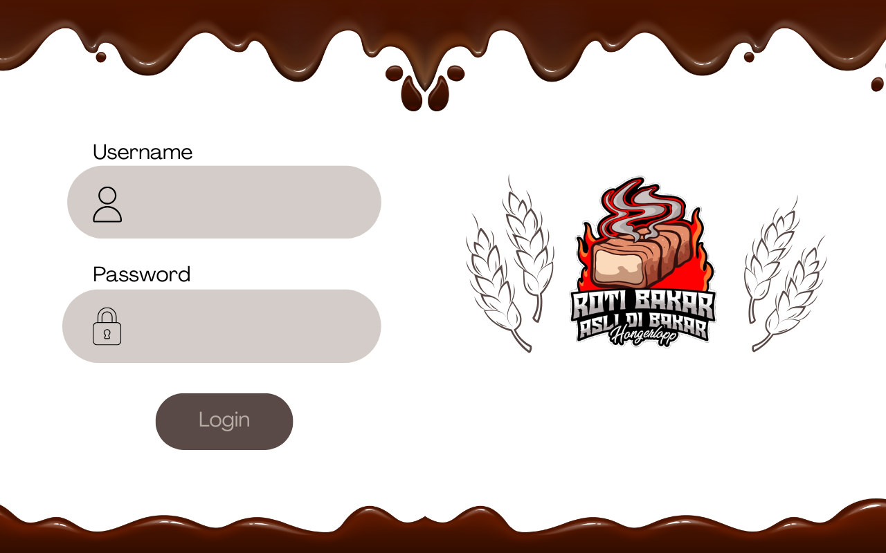
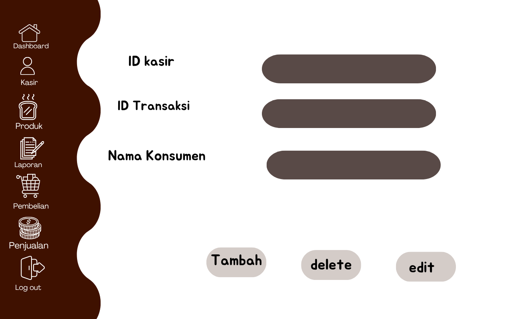
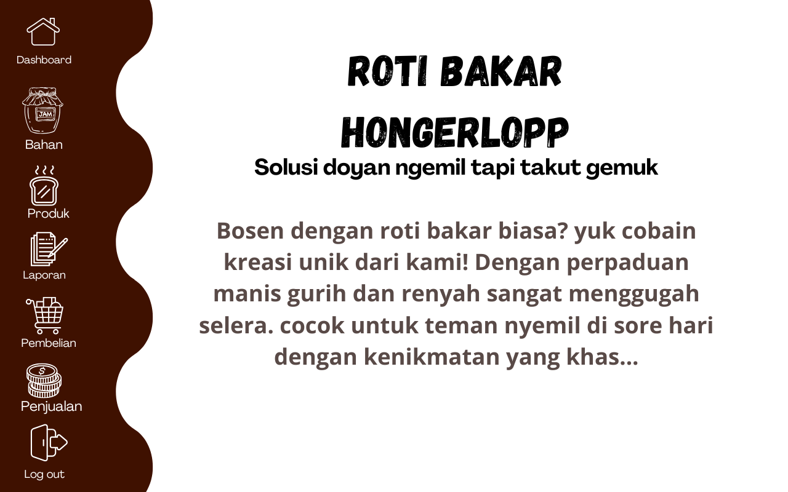


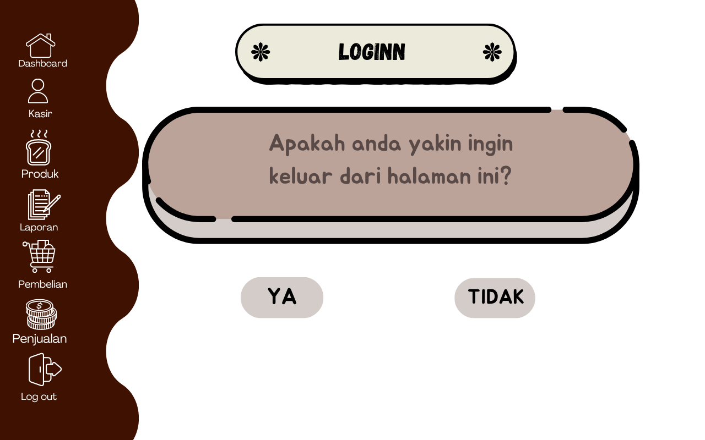
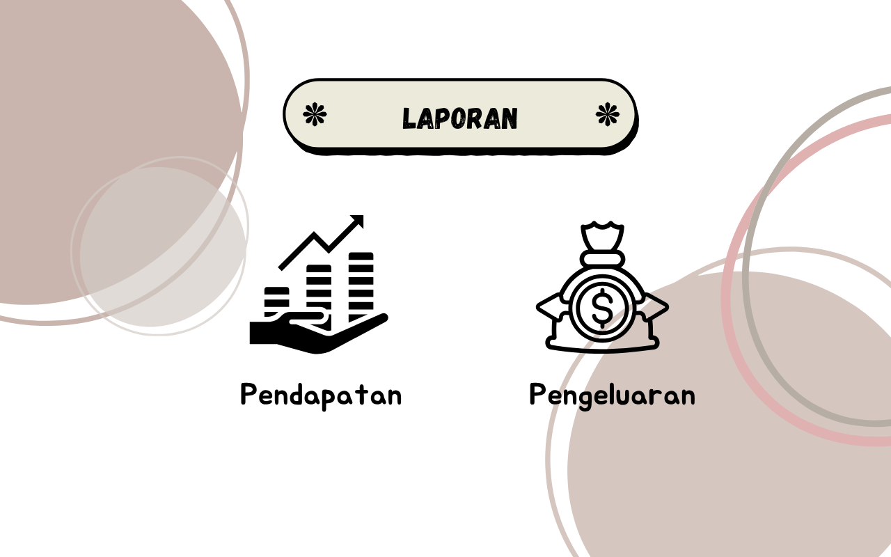
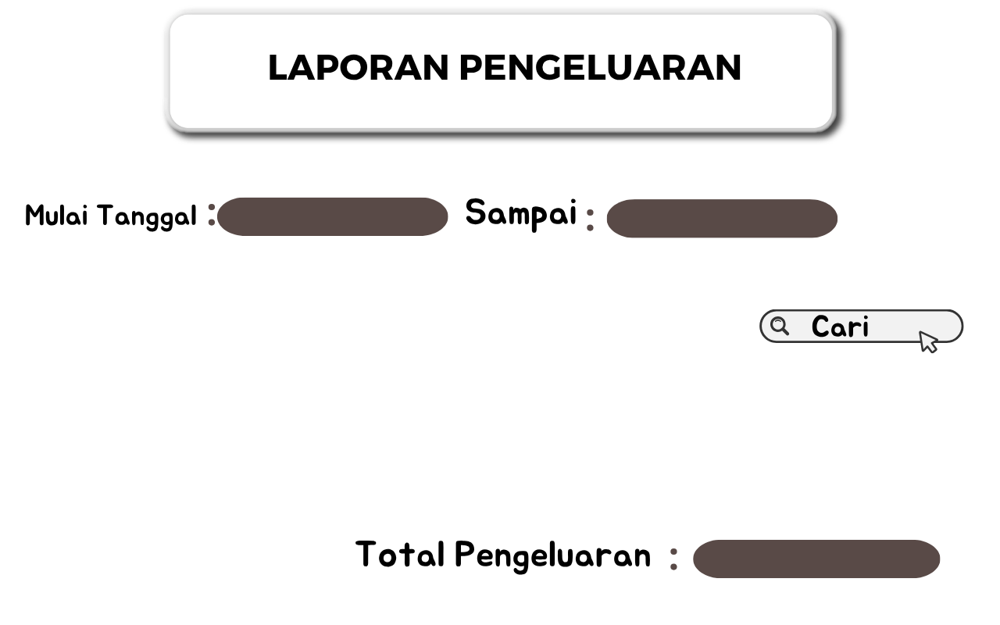

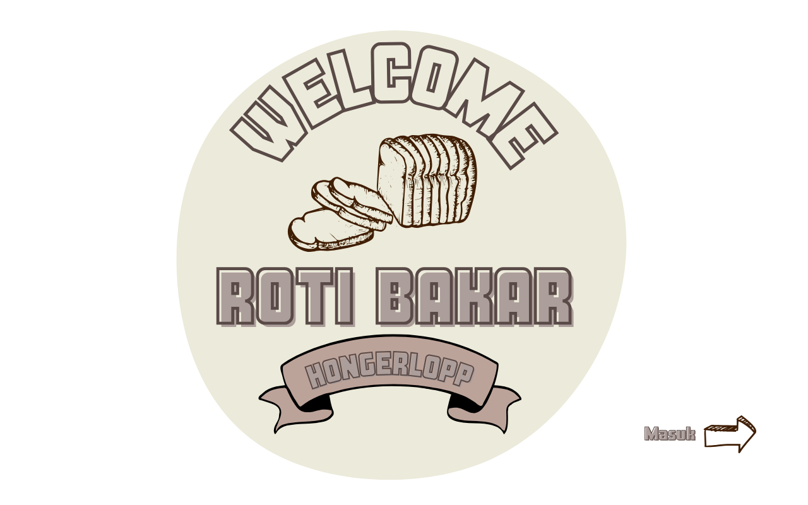
MokaPos
MokaPos merupakan aplikasi Point of Sale (POS) yang dirancang untuk membantu proses transaksi penjualan secara lebih cepat dan efisien. Fitur yang tersedia meliputi pengelolaan produk, stok barang, transaksi penjualan, serta laporan penjualan yang dapat membantu pemilik usaha dalam memantau aktivitas bisnis.

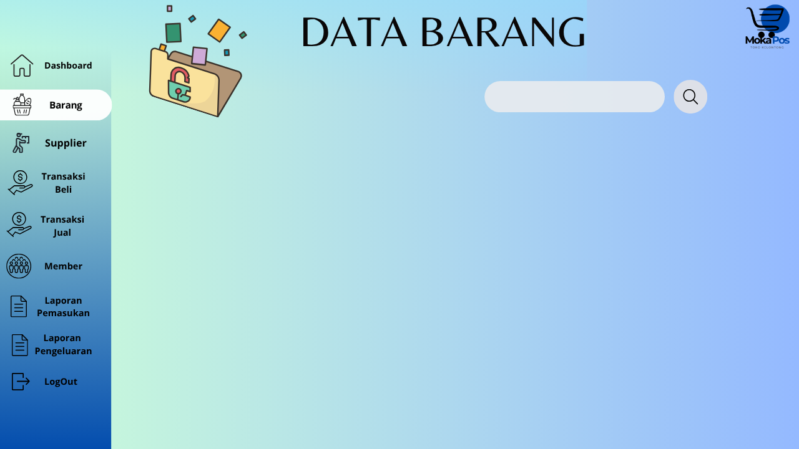
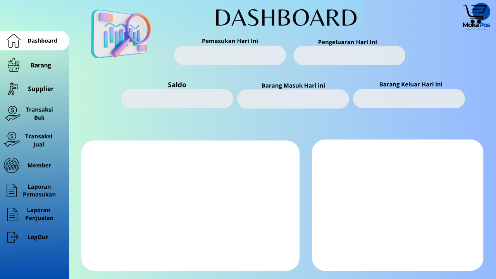


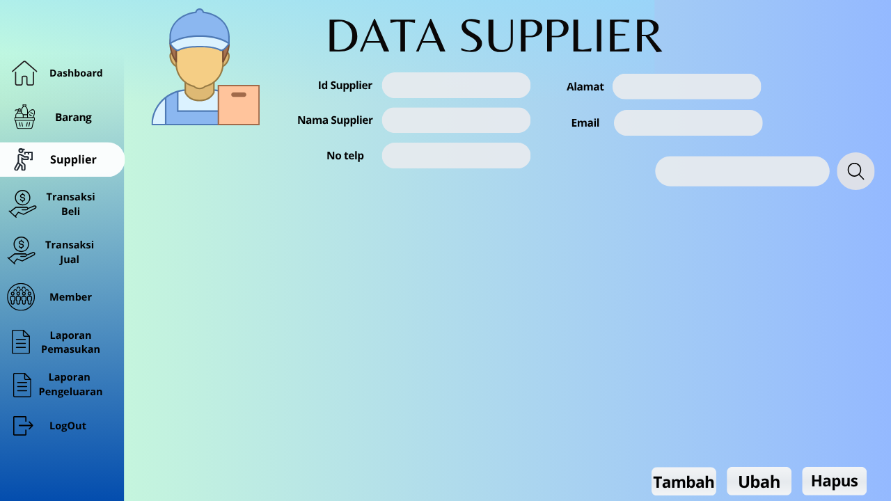
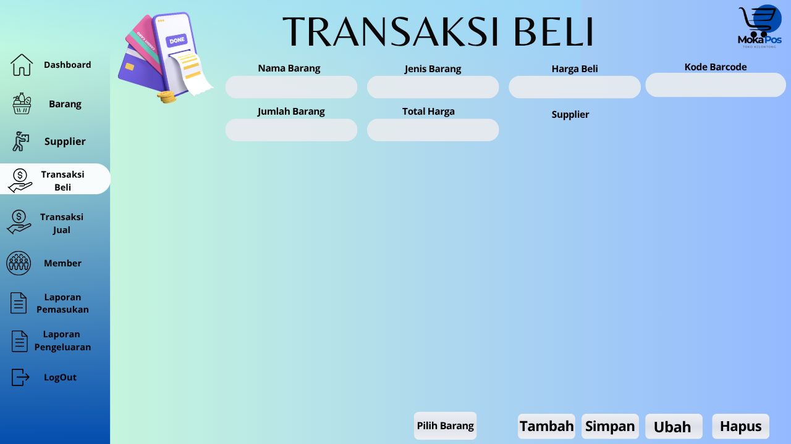
PosCare
PosCare merupakan aplikasi Posyandu Digital berbasis Flutter dan Laravel yang dikembangkan untuk membantu kader posyandu dalam mengelola data balita dan lansia secara digital. Aplikasi ini menyediakan fitur pencatatan riwayat pemeriksaan kesehatan, jadwal kegiatan posyandu, notifikasi pengingat, laporan hasil pengukuran, serta pengelolaan data pengguna sehingga proses pelayanan kesehatan masyarakat menjadi lebih efektif dan terorganisir.
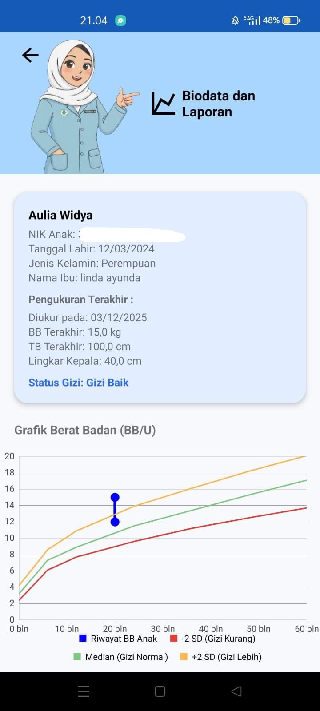
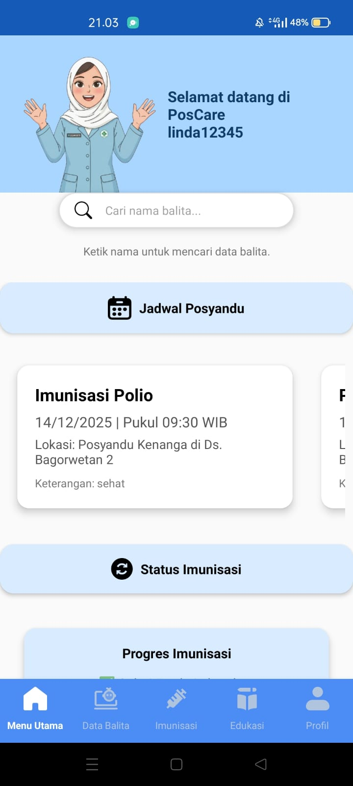
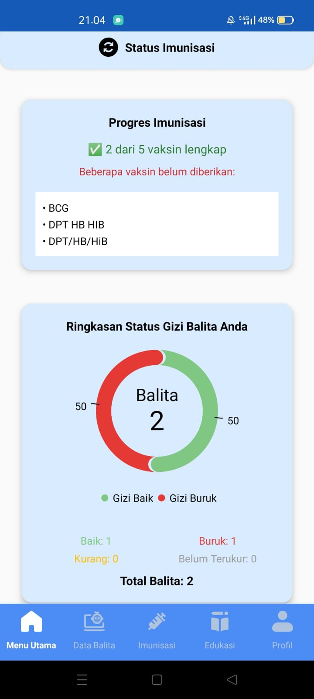

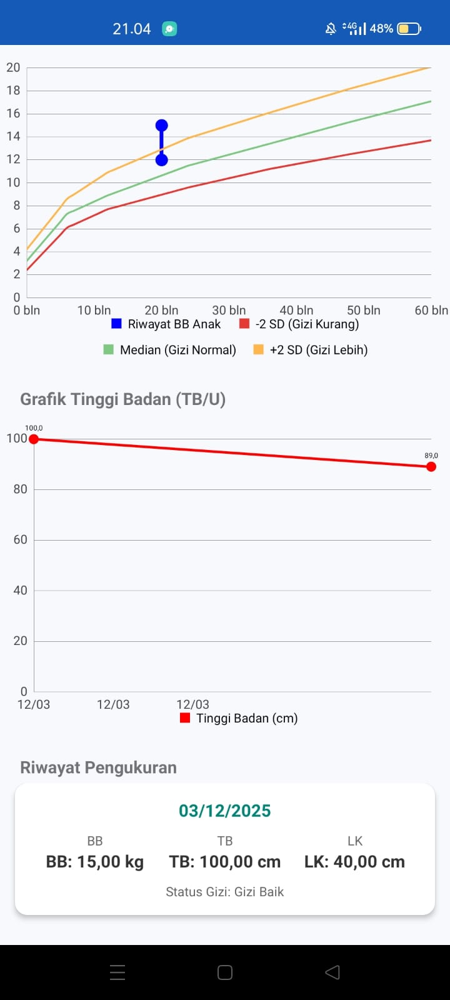

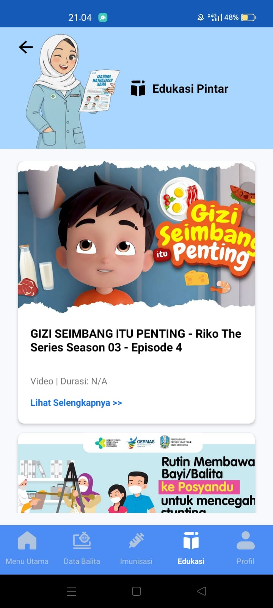


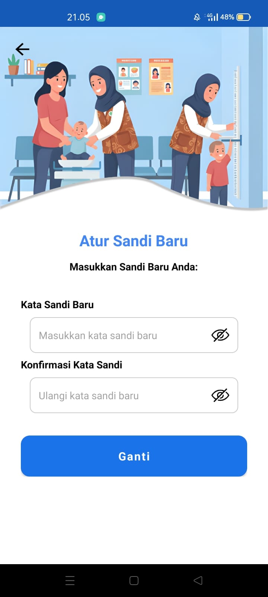

Pengalaman
Web Developer Intern
Mengembangkan dan melakukan pemeliharaan aplikasi berbasis web, membuat antarmuka pengguna yang responsif, serta membantu proses pengujian dan pengembangan fitur sesuai kebutuhan pengguna.
Sales Promotion Girl (SPG) - Lakoni
Bekerja sebagai SPG (Sales Promotion Girl) untuk membantu promosi dan pemasaran produk kepada pelanggan. Bertanggung jawab memberikan informasi produk secara jelas, melayani pelanggan dengan baik, serta membantu meningkatkan penjualan melalui komunikasi yang efektif.
- Mempromosikan produk kepada pelanggan secara langsung.
- Menjelaskan manfaat dan keunggulan produk.
- Membantu meningkatkan penjualan melalui pelayanan yang baik.
- Menjaga kerapian dan display produk.
- Membangun hubungan yang baik dengan pelanggan.
Sertifikat

Sertifikat mengikuti ept

Sertifikat study club UI/UX
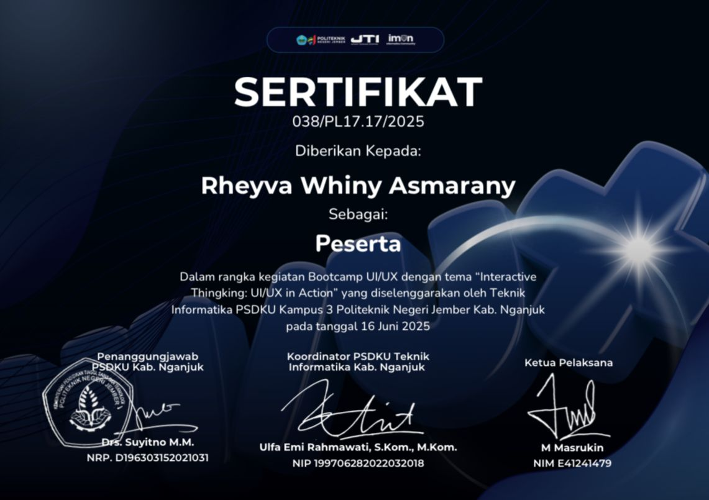
Sertifikat boothcamp UI/UX
Kontak
Email: rheyvawhinyasmarany@gmail.com